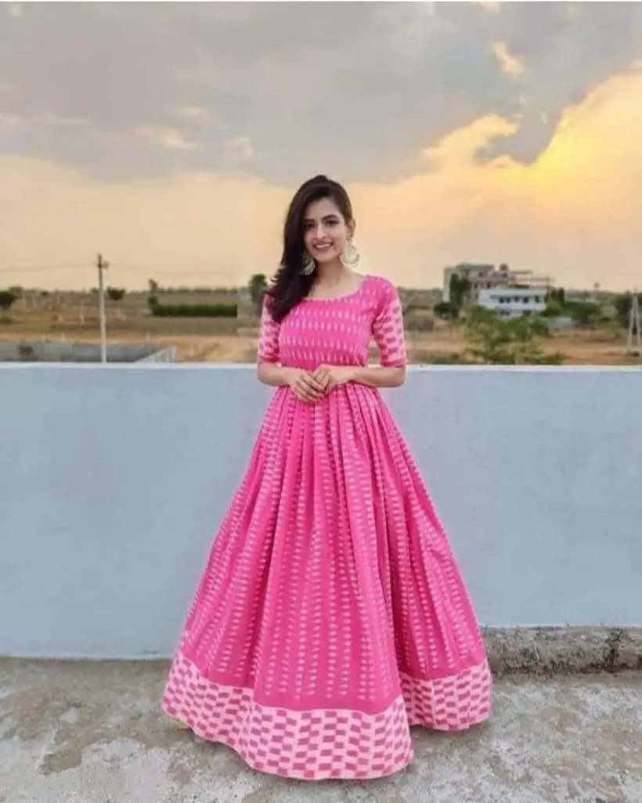
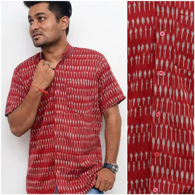
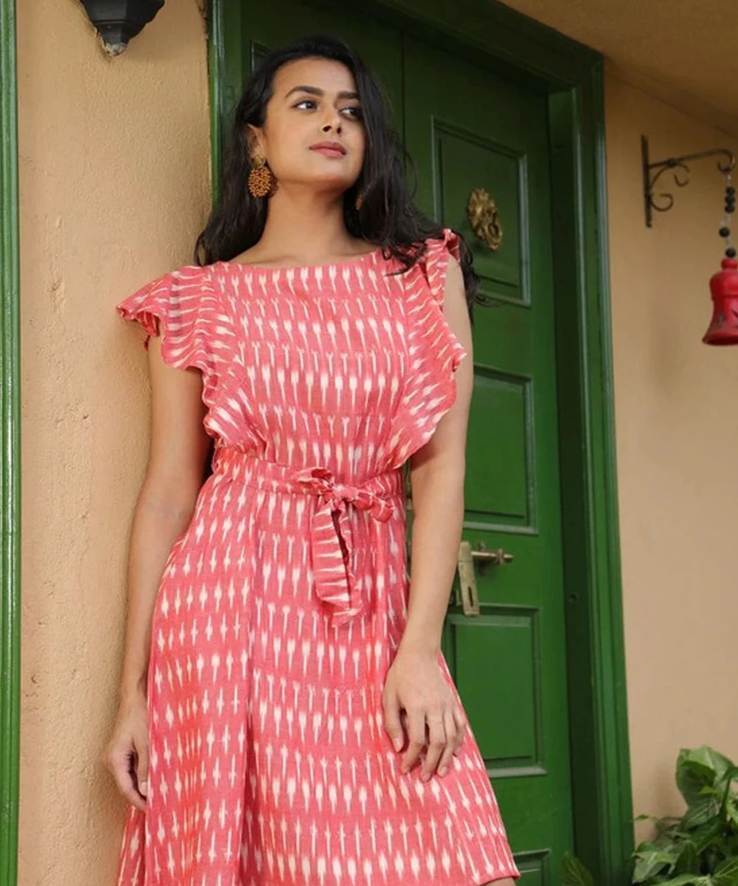
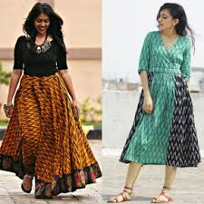
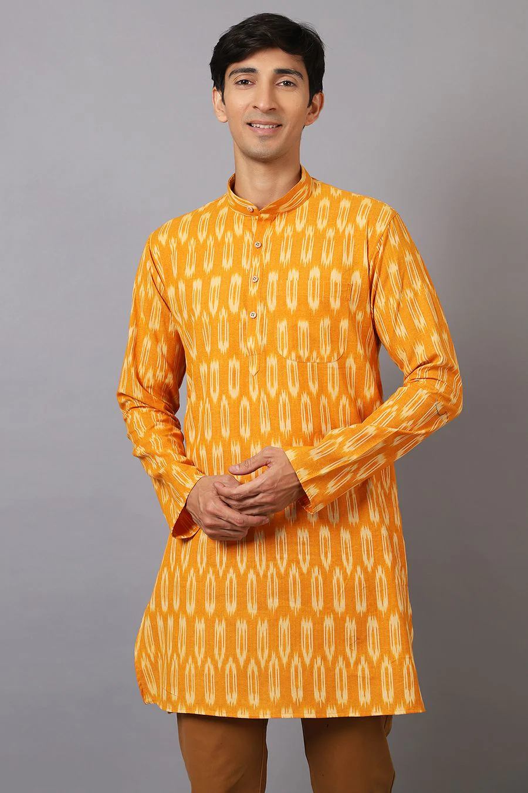
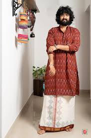
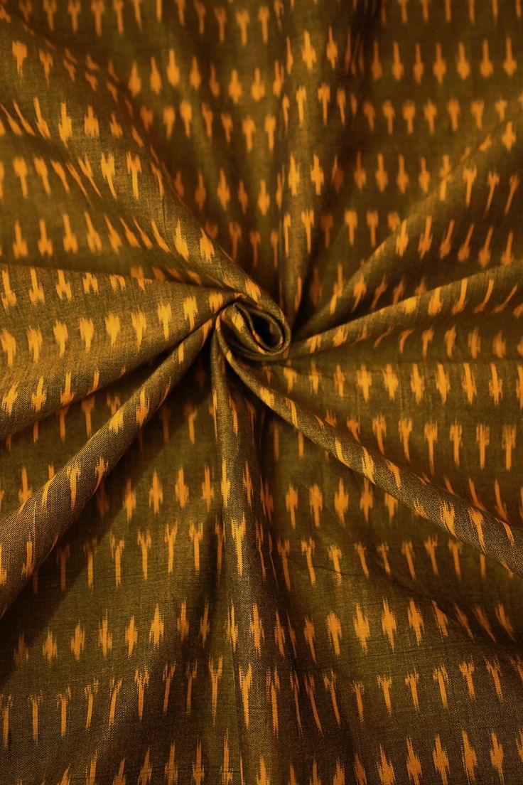
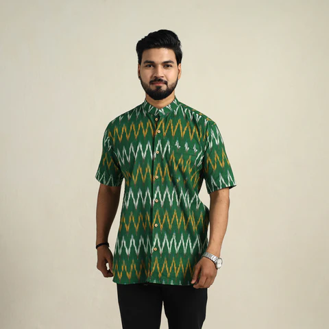

Authentic Pochampally Ikkat Fabrics -Woven Elegance
Traditional handwoven fabrics with rich patterns—perfect for custom outfits.
₹320 per meter

Grace in Every Thread -Pink & White Ikkat Fabric
Elegant pink and white tones woven into soft cotton for a timeless, feminine touch.
₹310 per meter

Bold Tradition -Maroon & White Ikkat Fabric
Rich maroon paired with crisp white brings out a striking, classic look perfect for ethnic wear.
₹315 per meter

Subtle Charm -Light Pink & White Ikkat Fabric
Soft tones for a graceful, everyday look.
₹300 per meter

Bold Elegance -Black & Green Ikkat Fabric
A vibrant blend for standout ethnic and contemporary styles.
₹330 per meter
Classic Calm -Blue & White Ikkat Fabric
A cool-toned combination perfect for subtle, graceful outfits.
₹310 per meter

Sunlit Charm -Yellow & White Ikkat Fabric
A cheerful blend that radiates warmth and brightens up your look.
₹300 per meter

Earthy Elegance -Brown Ikkat Fabric
A warm, grounded shade that adds natural charm and timeless appeal.
₹320 per meter

Bright Charm -Yellow Dotted Ikkat Fabric
Playful yet elegant, this yellow dotted ikkat fabric brings a cheerful touch to any design.
₹310 per meter

Classic Elegance -Green Ikkat Fabric
A timeless green ikkat fabric, perfect for refined, traditional, or contemporary styles.
₹305 per meter